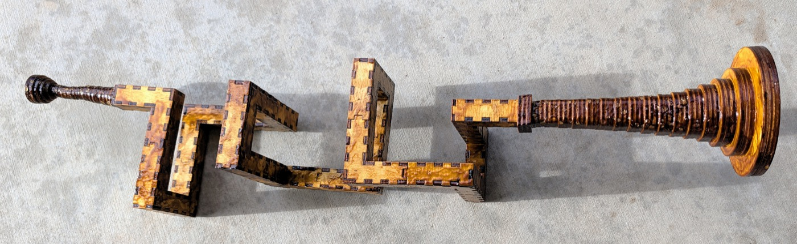

Trumpet
A trumpet cut flat from 3mm birch ply and glued into a tube. The airway is a 10mm square running through 16mm blocks — 10mm of air inside 3mm walls — and it never changes section from the mouthpiece to the throat of the bell.
The instrument that has been built is a coil of 1096mm in 12 sections, with a 90mm mouthpiece at one end and a 153mm bell at the other. It winds 990° — 2.75 turns, right-handed, about a north–south axis. Everything else here is a candidate for the next one.

The idea
A brass instrument is a long tube you have to fit into a small space. A trumpet does it with three tight bends and a lot of drawn brass. This does it by treating the tube as a walk through a lattice of cubes — north three, up two, east three — and cutting each run of that walk as a flat-packed box.
The walk is written down. N N1 W3 U2 E3 N3 D3 W2 U3 N3 E3 D2 W3 N3 U3 E2 D3 N1 is the bore of the built instrument: the first letter is the direction you enter from, and every term after it moves that many blocks. A generator turns that string into cut files, checks them, and tells you what you are holding.
python3 tools/bore_split.py "N N1 W3 U2 E3 N3 D3 W2 U3 N3 E3 D2 W3 N3 U3 E2 D3 N1" \
--bore=10 --straight=30 --no-writeA bare letter costs no block. The turn happens inside the block you arrived at, so the tube is 1 + the sum of the numbers blocks long. Forty-three steps, forty-four blocks.
What decides a good bore
Three things, and they pull against each other.
Length, because length is pitch. A tube twice as long sounds an octave lower. The four coils in parts/bore/concept/walk/no-elbows/meander/fold2-long-straight/ are one shape cut at four lengths — 274, 548, 822 and 1096mm, an exact 1:2:3:4 — and the built instrument is the longest of them.
Their folder names say 0.75, 1.5, 2.25 and 3 turns. Measured off the walks, the rotations are 0.25, 1.25, 2 and 2.75 — each name is a quarter to a half turn high. The lengths are exact; the turn counts in the names are not.
Section, because section is tone. The airway must stay 10mm square the whole way. That is what makes a turn expensive: a block that turns has openings on two different faces and both must sit square, so a turning block has to stay cubic even when the straights are stretched. The built bore is 28 straight blocks at 30mm and 16 turns at 16mm, which is where its 1096mm comes from.
Elbows, because an elbow is a bad part. An elbow is a turn stranded as its own one-block piece: three tabs, fiddly to hold, weak at the seam. Every walk offered here is elbow-free, and --refuse-elbows stops the generator before it writes anything rather than handing you a folder to inspect.
Fewest elbows is not cheapest in parts. Measured over 133 walks it trades 23 elbows for 46 more pieces, because folding a turn into a bend adds two walls to that bend while a lone elbow is only four parts for its whole block. It is still the right trade: parts are cheap and bad seams are not.
The instrument, end to end
| length | what it is | |
|---|---|---|
| mouthpiece | 90mm | 30 rings, 10mm square → ø3.66 throat → ø17 lip |
| bore | 1096mm | 44 blocks, 12 sections, no elbows |
| bell | 153mm | 17 rings, 10mm square → ø86 rim (ø80 of air) |
| total | 1339mm |
For scale, a B♭ trumpet is about 1480mm of tube, so this is a little shorter and should sit a little higher.
The pitch has not been measured. A plain closed-open pipe of 1.339m gives c/4L = 64 Hz and odd modes at 64, 192, 320, 448, 576, 704 Hz, but a real brass instrument's bell and mouthpiece pull those modes into a harmonic series and that calculation does not model either. Treat it as the ballpark it is; the four truncations above are a ready-made experiment in what the end correction actually does, since their bores are an exact 1:2:3:4.
The mouthpiece and the bell are shared
Neither end is touched by the way a bore turns, so only the tube belongs to an instrument. Both live in parts/, both take --bore, and both close onto the same 10mm square in a 16mm face.
cd parts/mouthpiece && python3 mouthpiece-round.py
cd parts/bell && python3 bell-round.py 17 --bore=10 --length=152 --mouth=80Each rebuilds its shipped sheet byte for byte and writes it into its own cut-files/.
The joint at each end is a square annulus of ply 3mm wide — 10mm inside, 16mm out. The bell's ring 0 is a flange that covers all of it: a 22mm square with a 10mm hole, standing 3mm proud. This was wrong until 2026-08-26, when the throat was taken from the bore's outside rather than its channel and ring 0 sat entirely outside the face it was supposed to seal. It was reported as gaps at the joint, which is exactly what it was.
Cutting
Everything is 3mm birch ply on an xTool P2S, 600 × 308mm of bed.
Colour is the cut order: blue engraves, then green → orange → cyan → black, and black frees the part. On a bore section blue engraves the section number and black cuts. On a ring, orange takes the aperture first so the hole is in before the outline releases the part.
Every part is engraved with its section number, and two sections of the same shape are cut separately so each carries its own. The built bore has two such pairs — 3 and 6, and 7 and 10.
Sections are numbered from the mouthpiece. Assemble in order; the first piece is marked buttin and the last buttout, and those two are the only plain ends.
What is in here
parts/
mouthpiece/ the shared mouthpiece, and its viewers
bell/ the shared bell, square and square-to-round
bore/
built/ the bore that exists as an object
concept/ every candidate, none of them cut
tools/ the generator, the gate, and the walksbuilt/ is one design. concept/ holds eighteen folders that ship cut files and a good many more that are only a walk and a viewer. Nothing in concept/ has been cut, and a folder there is not a promise that it should be.
Three ways to make a tube
They are not variations on each other. The section grows at every turn, and how much is the whole comparison:
| curve | section at a turn | why it exists | |
|---|---|---|---|
| lattice walk | 90° turns | +41.4% | fits a walk into a box |
| closed ring | a circle, 45° facets | +8.2% | a constant-section loop |
| swept curve | any planar curve | +3.5% at 30° | constant section on a smooth curve |
The lattice walk is what the built instrument uses, and it is the most expensive per turn by a wide margin. It buys packing: a walk folds into a box no other method reaches.
The swept curve (parts/bore/concept/swept-curve/) sweeps a rectangle along a planar curve, so two faces are flat and two are faceted. Five shapes are cut: a serpentine and an opposed pair at 1000mm, three spirals at 1000, 1458 and 1767mm, and a wave at 836mm — plus a 30° coupon that exists to prove the tooth survives the bend.
The coil search
parts/bore/concept/walk/no-elbows/coil/ holds seven coils promoted out of a search of seventeen, each because it won a category outright or tied for one. Each carries a why.txt with its walk, its win, and twelve metrics recomputed from that walk:
| coil | wins |
|---|---|
3x3-51 | smallest box, 459 |
2x2-134 | fewest distinct shapes, 2 |
3x7-22 | tightest spiral, 34mm rise per turn |
5x5-50 | least tube per turn, 15.1 blocks |
4x4-50 | calmest bore, 20.40 turns/m (tied) |
5x8-18 | largest average plate, 3009mm²; and two ties |
3x3-54 | fewest pieces, 30 (tied); smallest box with no shared wall (tied) |
Ten of the seventeen remain in search/, and a coil listed above as tied is tied with one of them. The scoring is in search/SCORING.md.
The toolchain
tools/ ships no cut files of its own — only the thing that makes them.
bore_split.py | the generator: a walk in, per-piece cut files out |
check.py | the gate, run automatically by every --write |
regress.py | runs the gate over the whole library |
snakebox.py, snakeboxvar.py | the Boxes.py generators that draw a section |
svgpath.py | reads back what was written — the gate parses the file, not the plan |
assemble.py | builds a section as a solid and asks directly whether it is sealed, rather than testing a proxy |
viewer.py | the one page builder; every viewer page here comes from it |
bore_render.py | stills, coloured by piece or by direction of travel |
nest.py | lays parts out on a sheet |
hilbert.py | writes a Hilbert cube as a walk |
mcwalk.py | renders a walk that crosses itself, which the generator refuses |
sizes.py | one design at more than one block pitch, in one viewer |
The gate
Nothing here is cut on trust. bore_split.py --write runs the checks itself and refuses to leave a folder unchecked; tools/regress.py runs the whole library.
cd tools && ~/boxes/venv/bin/python regress.py26 designs, 0 failed, 7681 individual checks.
It checks that each section closes round its bore, that the assembled bore is one sealed passage, that its volume matches the walk, that no feature is under 1.5mm, that every sheet fits the bed, that every seam is one tab side and one slot side, and that no engraving lands in a slot or off the material.
Use the virtualenv python. check.py imports shapely, which the system python3 does not have — and bore_split.py writes every file before it gates them, so a system-python --write leaves a folder of finished-looking cut files and a traceback where the gate should be.
A passing gate means no check failed, not that the part is buildable. Two real fit problems have reached the bench past a clean gate. The gate's floor is 1.5mm and nothing compares a feature against the features beside it.
Clearance
PLAY_BY_BORE is a lookup of what has actually been cut, not a curve through it, and it has one row: 0.025mm per side at the 10mm bore. A bore that is not in the table gets that value too — too loose is a worse joint than too tight is no joint — and says on stderr that it is guessing, because a guess that looks like a measurement is the dangerous kind.
Whether the requirement is absolute, a fraction of the tab, or something else takes a second bore to say, and there is one bore. tools/coupon-16mm/ is the coupon that would settle it.
Building it
- Cut the twelve bore sections from
parts/bore/built/meander/fold2-long-straight-3t/cut-files/, in order. - Cut the bell — 17 rings, three passes, 51 pieces. Cut once and you get a 51mm stub instead of a 153mm bell.
- Cut the mouthpiece — 30 rings, one pass.
- Glue each bore section closed, then join them in engraved order.
- Stack the bell rings from ring 0 at the bore; stack the mouthpiece rings from ring 0 likewise. Both are engraved in hex,
0at the bore. - Sand and fill the mouthpiece's staircase and round its rim over before you put a lip to it.
The bell is cut more than once. Each sheet draws every ring once, and the x3 in its filename is how many times the sheet goes through the machine.
Licence
CC0 1.0 Universal. Do what you like with it.
parts/LICENSE and tools/LICENSE are copies of the same text, so that a directory taken on its own still carries it.